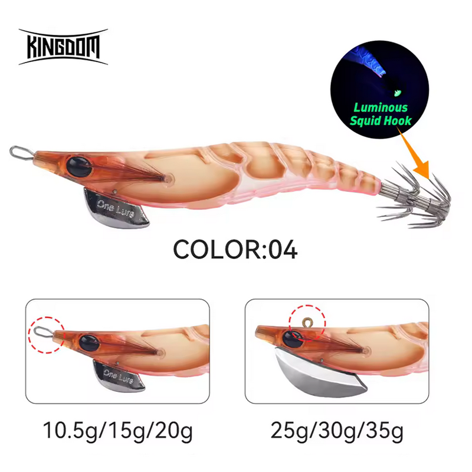

Egis Low Cost
Inicio
Señuelos
YAMASHITA
DTD
YO-ZURI
LETOYO
KINGDOM
SQUID KING
OTROS
Componentes
Color Egis
Acerca de
KINGDOM REINO – Análisis completo (Color 04)

🦐 Color gamba natural cálido, discreto y muy efectivo en pesca técnica.
🎨 Características
Diseño:
Cuerpo tipo gamba con acabado translúcido.
Color base:
Marrón claro y crema con transiciones suaves.
Efecto visual:
Muy natural, sin contrastes agresivos.
Ojos:
Oscuros, discretos.
Coronas:
Ligeramente luminiscentes, solo como referencia visual cercana.
Pesos disponibles:
10.5g / 15g / 20g y 25g / 30g / 35g.
🌤️ Condiciones ideales de uso
☀️
Día claro:
Condición óptima.
🌊
Aguas claras o muy claras:
Excelente rendimiento.
🐙
Calamares desconfiados:
Muy recomendado.
🌅
Amanecer / atardecer:
Funciona de forma estable.
🌙
Noche:
Rendimiento bajo si no hay luz ambiental.
🧠 Comportamiento esperado
👉 Presentación extremadamente realista.
👉 Ideal para recogidas lentas y pausadas.
👉 Reduce ataques fallidos y rechazos.
👉 Muy útil cuando colores vivos no funcionan.
⚙️ Resumen práctico
Condición
Eficiencia
🌊 Agua clara
🔥 Excelente
☀️ Día soleado
🟢🟢 Muy alta
🐙 Calamar receloso
🔥 Excelente
🌅 Luz baja
🟡 Media
🌙 Noche cerrada
🔴 Baja
🛒 Comprar KINGDOM REINO